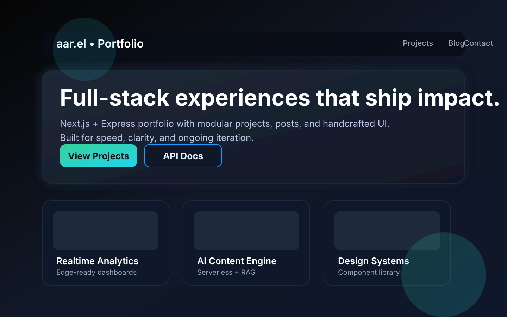

Portfolio Website
Full-stack personal site powered by Next.js 14, TailwindCSS, and an Express API. Build and ship projects, posts, and case studies from a single codebase tuned for modern deployments.
Next.js 14
Express API
TypeScript
TailwindCSS
Monorepo Workflow

Frontend
Next.js App Router, React Server Components, and Tailwind for rapid UI iteration.
Backend
Express service serving JSON content to the UI as REST endpoints.
Deployment
Targets Vercel (frontend) and Render/Fly (backend) with matching build commands.
Features
-
Modular components
Cards, layout primitives, and section builders live in
frontend/components. -
Dynamic content
Projects and posts stored in JSON (
backend/src/data) and served via/api/projects+/api/posts. -
Tailwind theming
Custom palette + typography in
frontend/tailwind.config.tskeeps utilities consistent. -
API growth path
Route handlers in
backend/src/routesmake it easy to add auth, filters, or pagination. - Cross-platform hosting Works offline, across LAN, or on cloud providers without config drift.
Tech Stack
| Layer | Technology |
|---|---|
| Frontend | Next.js 14, React 18, TypeScript, TailwindCSS |
| Backend | Node.js 22, Express 5, TypeScript |
| Styling | TailwindCSS + custom theme tokens |
| Data | JSON files (backend/src/data) |
| Deployment | Vercel (frontend) + Render/Fly (backend) |
Folder Structure
portfolio-website/
├─ backend/
│ ├─ src/
│ │ ├─ routes/
│ │ │ ├─ posts.ts
│ │ │ └─ projects.ts
│ │ ├─ data/
│ │ │ ├─ posts.json
│ │ │ └─ projects.json
│ │ └─ server.ts
│ ├─ package.json
│ └─ tsconfig.json
└─ frontend/
├─ app/
│ ├─ globals.css
│ ├─ layout.tsx
│ ├─ page.tsx
│ └─ projects/[slug]/page.tsx
├─ components/
│ ├─ Navbar.tsx
│ ├─ Footer.tsx
│ └─ ProjectCard.tsx
├─ lib/api.ts
├─ tailwind.config.ts
└─ package.jsonLocal Setup
Clone
git clone https://github.com/<your_username>/portfolio-website.git && cd portfolio-website
Install
cd backend && npm install && cd ../frontend && npm install
Run backend
cd backend && npm run dev → http://localhost:4000
Run frontend
cd frontend && npm run dev → http://localhost:3000
Verify
Hit the UI at http://localhost:3000 and the API at http://localhost:4000/api/projects.
Contributor Guide
Align with the standards outlined in AGENTS.md for coding style, testing, linting, and PR formatting.
Deployment
Production builds run npm run build in /frontend and /backend. Lint the UI (npm run lint in /frontend) and confirm both dev servers start cleanly before shipping to Vercel/Render.